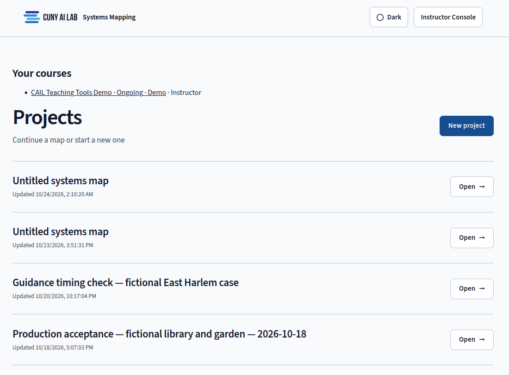
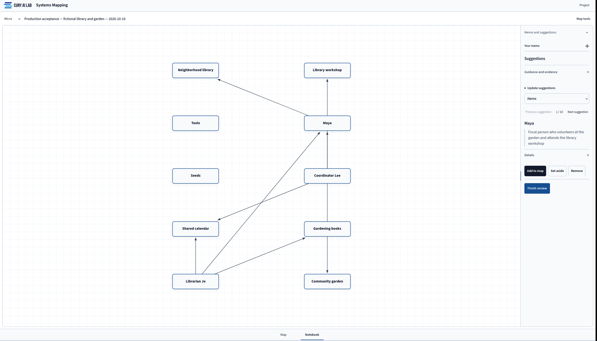

Getting Started
Accept your course invitation, open a project, and build a first Micro map from one memo.
Get Access
Students enter a course workspace through an instructor's course in the CUNY AI Lab. Instructors request a course through the Lab, then invite students with the Lab's class invitation. Once the Lab approves the course for Systems Mapping, it appears under Your courses on the Projects page. Course owners can open the Instructor Console from there.
Accept your instructor's invitation before opening Systems Mapping through the Lab portal or systems-mapping.ailab-452.workers.dev. Sign in with CUNY Login and choose your course under Your courses. The app checks your membership on each request. It stores course maps separately from maps in the general workspace, where Lab members can keep their own projects without joining a course.
First Sign-In
You need a CUNY Login and a recent browser on a computer or phone. The phone view uses a compact toolbar. Bring a memo such as a page of field notes, a case description, an interview transcript, or an assigned reading. The app accepts about 128 KB of memo text, so split a longer document before pasting it.
The sign-in page shows the four levels and the CUNY Login button. After signing in, choose New project on the Projects page. Each project holds one cumulative map. Write a one-sentence inquiry that names the focal person or group and the question you want to pursue, then paste or upload your memo.

Your First Micro Level
The Notebook presents the next task. Start a new map by choosing Generate guidance in Memo review. The first pass requests at most six items and four connections. After a valid response, continue to the map and review the suggestions. You can then use Map tools → Add item to add supported items from your own reading.
For each model suggestion, open Details and compare its source passage with the proposed item. Choose Add to map when you can support the suggestion, Set aside when you want to revisit it, or Remove when you reject it. Once every suggestion has a decision, press Finish review. You can then drag items into place and select each one to edit its interpretation. Select a connection to describe the relationship and give it a verb.
The instructor's Micro question appears under Field Notes in the Notebook. Answer it before completing the level, then choose Continue to Meso-level. Your Micro items retain their identities and remain on the map as you begin Meso.

Compare Your Reading with the Model's
Before choosing Generate guidance, write down three people and two places you expect the model to find. Compare that list with its suggestions and return to the memo when you disagree. Identify an omission or an unsupported suggestion, then explain the difference through a passage.
Choose a Manageable First Memo
A short memo lets you inspect each proposed relationship against the source. Begin with about a page and name the focal person in your inquiry so you can judge whether each item belongs to that person's ecology. Use Set aside for an item you may need at a later level. That choice retains the suggestion for another look.
Continue Your Map
The Four Levels explains what changes when you move to Meso, Exo, and Macro. Workspace Basics locates the controls you will use along the way. Instructors can use Instructor Console to prepare Field Notes questions and guidance before students begin.
Privacy and Saved Work
The app saves maps to your account and keeps a recovery copy in the browser. Instructors can see course progress metadata and revisions you explicitly submit. A shared project link also lets eligible recipients view the linked map. Read Privacy & Limits before adding sensitive material.